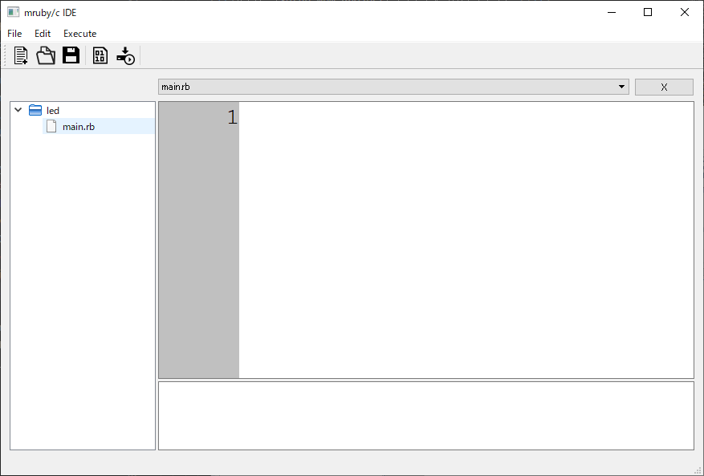

まずはIDEのインストール！
mruby/cIDEインスールのぺージを参考にしてください。プログラムを書いていく
- 何はともあれmruby/cIDEを起動(mrubyc_ide.exe)
- 「File -> New… -> Project」を選択
- すると「Setup New Project」というタブが出てくる。
- Project Nameを入力しなければならないので入力する(ledという名前にしておく)
- OKボタンをクリックして閉じる
- 「File -> New… -> File」を選択
- すると「Setup Add New File」というタブが出てくる。
- File Nameを入力しなければならないので入力する。 拡張子には必ず[.rb]を付ける。(main.rbという名前にしておく) 
- プログラムを記述していく。1秒間隔でLEDのON,OFFを繰り返す。
while true # 無限ループ
digitalWrite(0, 1) # LED1をON
sleep(1) # 1秒スリープ
digitalWrite(0, 0) # LED1をOFF
sleep(1) # 1秒スリープ
end
led4つはPin0,Pin1,Pin5,Pin6へ接続されている。
第二引数の出力値は1の場合ON(3.3V)、0の場合はOFF(0V)を第一引数のピン番号にて指定したピンから出力する。
プログラムをRBoardへ書き込む
ちなみに失敗した場合のログ
上手く書き込めなかった場合。USBケーブルを抜き差ししたりすると良い。
Start connection.
..........
Can't connect target device.
Start connection.
Can't open serial port line.
例題：
- LEDの点滅速度を変えてみる
- 2つのLEDを交互に点滅させてみる
- 4つのLEDを順に点滅させてみる
while true # 無限ループ
digitalWrite(0, 1) # LED1をON
sleep(0.1) # 1秒スリープ
digitalWrite(0, 0) # LED1をOFF
sleep(0.1) # 1秒スリープ
end
while true # 無限ループ
digitalWrite(0, 1) # LED1をON
sleep(1) # 1秒スリープ
digitalWrite(1, 1) # LED2をON
digitalWrite(0, 0) # LED1をOFF
sleep(1) # 1秒スリープ
digitalWrite(1, 0) # LED2をOFF
end
leds = [0, 1, 5, 6]
while true
leds.each do |i|
digitalWrite(i,1)
sleep(1)
digitalWrite(i,0)
end
end